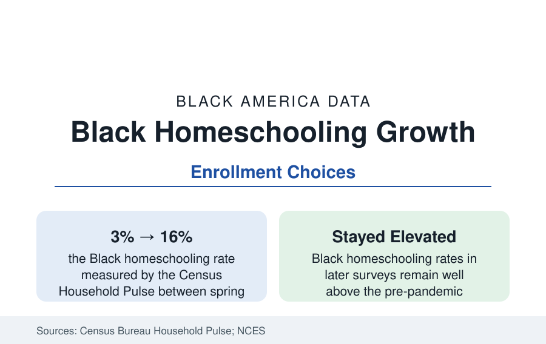

Black Education
Black Homeschooling and School Choice: The Fastest Shift in the Enrollment Data
Black homeschooling rates recorded the largest jump of any group in the pandemic-era surveys — from about 3 percent to the mid-teens — and have stayed elevated. The enrollment profile.

The fastest-moving number in Black education is not in a school at all. The Census Bureau's Household Pulse Survey measured the share of Black households homeschooling at about 3 percent in the spring of the pandemic year — and at roughly 16 percent by that fall, the largest jump of any demographic group — and the follow-up surveys, Pulse's later waves and the NCES parent surveys, find Black homeschooling rates settled well above the old baseline. Alongside the homeschool surge runs the broader choice data: charter enrollment, private scholarship programs, and the new education savings account systems. This article reports the choice data.
The Pandemic Surge and Its Composition
The Pulse measurement requires its footnote, which the Bureau itself supplied: the survey asked whether children were homeschooled in the strict sense, and pandemic-era responses partly captured dissatisfaction and confusion with remote public schooling; the NCES's stricter instruments put the true homeschool population lower. With that caution, the direction and the racial ordering are corroborated across instruments: Black families' measured homeschooling rose most, and the reasons research (the survey follow-ups and the academic interview studies) records a consistent set — health caution first, then school-climate and discipline concerns (the discipline data of the companion profile, cited by name in the interview literature), curriculum and cultural-content preferences, and the discovery, during remote schooling, of what their children's school days actually contained. The microschool and learning-pod layer that grew in the same years — small, often Black-led, frequently church- or cooperative-based — blurs the homeschool category's edge in the data.
Charters and the Public-Choice Layer
Charter schools enroll Black students at roughly double their public-school share — Black students form about a quarter to 30 percent of charter enrollment nationally — concentrated in the big cities, where charter sectors in New Orleans (near-total), Detroit, Washington, Philadelphia, and Newark educate large fractions of the cities' Black children. The outcome literature on charters is the education data's most contested terrain: the large-scale studies find average effects near zero nationally with strong positive results for the urban, high-dosage networks serving Black students in several replicated analyses, and negative results for the virtual and for-profit segments; the reference reports the distribution rather than a verdict. Enrollment is itself a data point, however: Black parents are the charter sector's most committed constituency in the survey record, choosing at rates the satisfaction data say reflect both hope and grievance with the assigned alternative.
Private Scholarships and the ESA Wave
The private-choice layer is being rebuilt by legislation in the current decade: tax-credit scholarships, vouchers, and the new universal education savings accounts (adopted in a growing list of states, concentrated in the South and interior West where Black populations are large) fund private tuition and home education expenses from public budgets. Participation data are young and state-reported, but the demographic pattern of the older programs is documented: the established urban voucher and scholarship programs (Milwaukee, Cleveland, Washington, Louisiana, Indiana) serve substantially Black student populations, while the universal ESA programs' early data show uptake skewed toward families already outside public schools — the equity question the evaluations are built to track. Black private-school enrollment overall remains modest (the K-12 profile's sector shares), constrained by tuition and by the thin supply of Black independent schools, whose surviving historic institutions the enrollment data count in the dozens.
What the Shift Means in the Data
Taken together — homeschooling at multiples of its old rate, a quarter-plus of charter seats, the choice programs' expansion — the enrollment data describe Black parents as the most active choosers in American education, exercising exit at rates exceeding every other group. The system's interpreters divide on the meaning (empowerment versus abandonment of the common school), and the outcome data for the newest layers are not yet in. What is not contestable is the revealed-preference finding itself, which aligns with the satisfaction surveys: Black parents report the lowest satisfaction with their children's assigned public schools of any group in the NCES parent data, and the choice data are that dissatisfaction, acted on.
Reading the Choice Data
The choice profile's discipline is measurement humility — the pandemic numbers are inflated by category confusion, the newest programs are unaudited, the charter literature is a distribution, not a number. What survives every caution is the ordering: on every instrument, in every sector, Black families choose at the highest rates in the system. That fact, more than any single program's effect size, is the enrollment story of the decade.
More in Black Education
Black Educational Attainment: High School Parity, the College Gap
About 89 percent of Black adults hold a high school diploma and one in four holds a bachelor's degree or higher — the attainment ladder, the college completion gap, and the generational trend.
Historically Black Colleges and Universities: Enrollment and Degrees
More than 100 HBCUs enroll roughly 290,000 students and award about one in six Black bachelor's degrees — an outsized share from a small sector. The federal education data.
Black College Enrollment: 2.4 Million Students
About 2.4 million Black students are enrolled in American colleges — nearly two-thirds of them women. The NCES enrollment data by sector, level, and trend.
Source: U.S. Census Bureau, Household Pulse Survey; National Center for Education Statistics, Parent and Family Involvement surveys; EdChoice and state choice-program data.